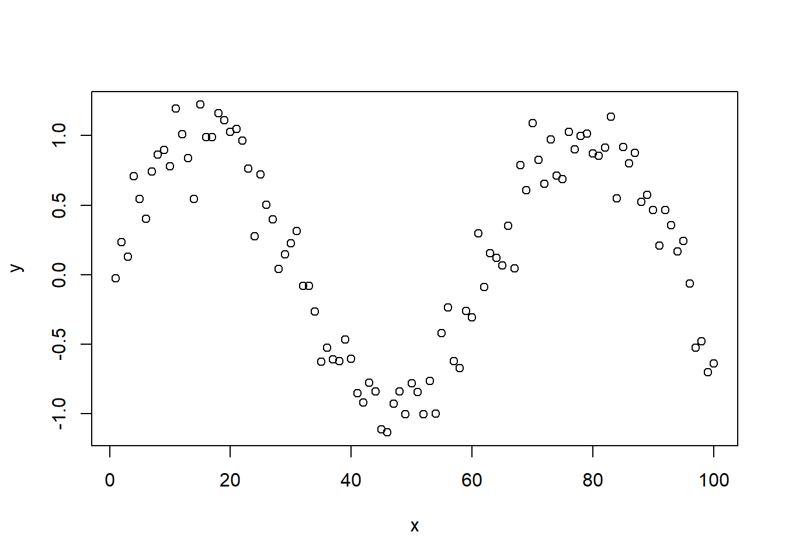
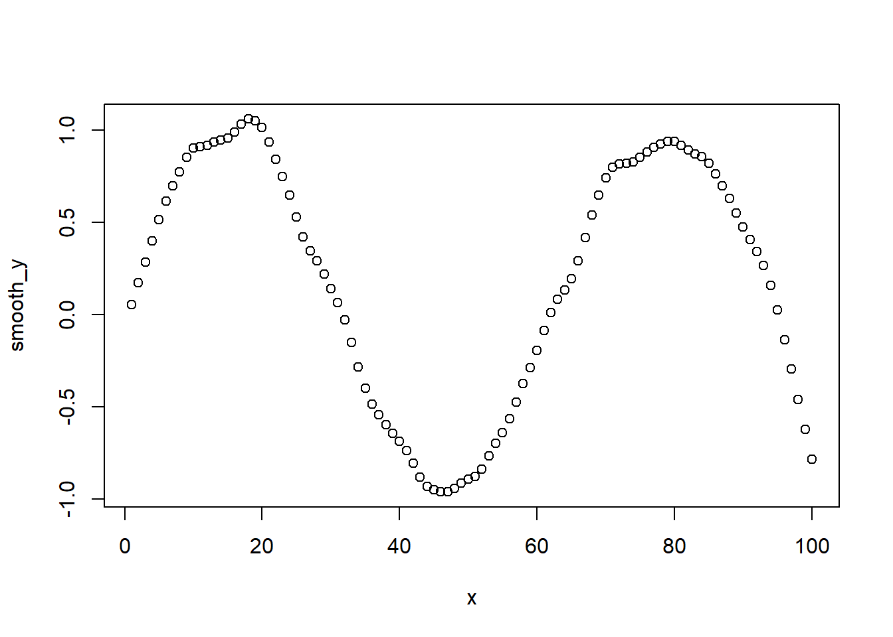

set.seed(1)
x <- 1:100
y <- sin(x/10) + rnorm(100,0,0.2)3 Lowess Practical
3.1 1. Generate simulated data
3.2 2. Implement the LOWESS Algorithm
customLowess <- function(x,y,f){
k <- ceiling(f*100)
y_hat <- numeric(100) #wghts <- c() #ngb <- x[1:k]
for (i in 1:100){
# find the nearest k neighbors
distances <- abs(x-x[i])
sortedIndices <- sort.list(distances)
nearest_indices <- sortedIndices[1:k]
x_ngb <- x[nearest_indices]
y_ngb <- y[nearest_indices]
dmax <- max(distances[nearest_indices])
wghts <- (1- (distances[nearest_indices]/dmax)^3)^3
W <- diag(wghts)
X <- cbind(1,x_ngb)
beta <- solve(t(X)%*%W%*%X)%*%t(X)%*%W%*%y_ngb
y_hat[i] <- c(1,x[i])%*%beta
}
return(y_hat)
}3.2.1 2.1 Comparing values from different functions
We now need to check if the custom function yields the same results as the in-built R lowess() function. For this we render the following code:
customLowess(x,y,0.1) [1] 0.05318984 0.17112159 0.28583652 0.39848166 0.51362434 0.61502073
[7] 0.69657163 0.77258633 0.85207174 0.90378260 0.91090679 0.91852545
[13] 0.93437907 0.94547834 0.95576868 0.98875892 1.03298336 1.05997164
[19] 1.05223132 1.01390308 0.93628258 0.84254726 0.74941117 0.64778904
[25] 0.52816562 0.42003221 0.34643782 0.29157394 0.21840815 0.14156424
[31] 0.06430577 -0.03012103 -0.15077805 -0.28335931 -0.40089438 -0.48444816
[37] -0.54509429 -0.59616372 -0.64337365 -0.68855678 -0.73724333 -0.80557431
[43] -0.88278878 -0.93276422 -0.95133720 -0.96144377 -0.96169294 -0.94337715
[49] -0.91482838 -0.89283369 -0.87868493 -0.83782752 -0.76668823 -0.69945561
[55] -0.63909661 -0.56498663 -0.47521356 -0.37407801 -0.28877558 -0.19611312
[61] -0.08749024 0.01195302 0.08288354 0.13313392 0.19530193 0.29144660
[67] 0.41562433 0.53988437 0.64919041 0.74000481 0.79986677 0.81536201
[73] 0.81864675 0.82603677 0.85133469 0.88314733 0.90638267 0.92514639
[79] 0.93737181 0.93805806 0.91914202 0.89233870 0.87175733 0.85664260
[85] 0.81991272 0.76313592 0.69772103 0.62884032 0.55101403 0.47490802
[91] 0.40497144 0.34247160 0.26636290 0.15971002 0.02365434 -0.13596321
[97] -0.29688333 -0.45989009 -0.62360810 -0.78497250lowess(x,y, f = 0.1, iter = 0)$x
[1] 1 2 3 4 5 6 7 8 9 10 11 12 13 14 15 16 17 18
[19] 19 20 21 22 23 24 25 26 27 28 29 30 31 32 33 34 35 36
[37] 37 38 39 40 41 42 43 44 45 46 47 48 49 50 51 52 53 54
[55] 55 56 57 58 59 60 61 62 63 64 65 66 67 68 69 70 71 72
[73] 73 74 75 76 77 78 79 80 81 82 83 84 85 86 87 88 89 90
[91] 91 92 93 94 95 96 97 98 99 100
$y
[1] 0.05318984 0.17112159 0.28583652 0.39848166 0.51362434 0.61502073
[7] 0.69657163 0.77258633 0.85207174 0.90378260 0.91090679 0.91852545
[13] 0.93437907 0.94547834 0.95576868 0.98875892 1.03298336 1.05997164
[19] 1.05223132 1.01390308 0.93628258 0.84254726 0.74941117 0.64778904
[25] 0.52816562 0.42003221 0.34643782 0.29157394 0.21840815 0.14156424
[31] 0.06430577 -0.03012103 -0.15077805 -0.28335931 -0.40089438 -0.48444816
[37] -0.54509429 -0.59616372 -0.64337365 -0.68855678 -0.73724333 -0.80557431
[43] -0.88278878 -0.93276422 -0.95133720 -0.96144377 -0.96169294 -0.94337715
[49] -0.91482838 -0.89283369 -0.87868493 -0.83782752 -0.76668823 -0.69945561
[55] -0.63909661 -0.56498663 -0.47521356 -0.37407801 -0.28877558 -0.19611312
[61] -0.08749024 0.01195302 0.08288354 0.13313392 0.19530193 0.29144660
[67] 0.41562433 0.53988437 0.64919041 0.74000481 0.79986677 0.81536201
[73] 0.81864675 0.82603677 0.85133469 0.88314733 0.90638267 0.92514639
[79] 0.93737181 0.93805806 0.91914202 0.89233870 0.87175733 0.85664260
[85] 0.81991272 0.76313592 0.69772103 0.62884032 0.55101403 0.47490802
[91] 0.40497144 0.34247160 0.26636290 0.15971002 0.02365434 -0.13596321
[97] -0.29688333 -0.45989009 -0.62360810 -0.784972503.3 3. Plots
We then plot the original data and the smoothed data for comparison:
smooth_y <- customLowess(x,y,0.1)
plot(y~x)
plot(smooth_y ~ x)
From the plots, we can see that the lowess function produces less scattered values compared to the original data points.